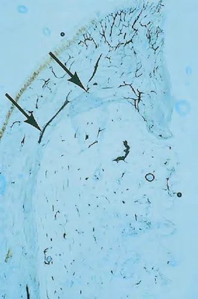

نسخه استخراجشده؛ ترجمه یا تأیید علمی انجام نشده است. وضعیت: captured
موکوزای پریایمپلنت هم مثل لثه دو بخش دارد: یک اپیتلیوم سدی به طول حدود ۲ میلیمتر (شبیه اپیتلیوم اتصالی) و زیر آن حدود ۱٫۵ میلیمتر بافت همبند. بدن این حدود ۳٫۵ میلیمتر را به هر قیمتی حفظ میکند: اگر موکوزا نازکتر از این باشد، فضا با تحلیل اندکی از استخوان کرستال فراهم میشود. ظاهرش آشناست — ولی دو تفاوت، همهچیز را عوض میکند.
تفاوت یکم — جهت الیاف. کنار دندان، الیاف کلاژن از سمنتوم بیرون میزنند و تقریباً عمود بر سطح ریشه مینشینند. کنار ایمپلنت، الیاف از پریوستئوم کرست استخوان میآیند و موازی با سطح اباتمنت بالا میروند؛ هیچ الیافی داخل تیتانیوم فرو نمیرود.
تفاوت دوم — بافت. بافت همبند فوقکرستال کنار ایمپلنت کلاژن بیشتر ولی فیبروبلاست و عروق کمتری دارد. بافتی سفتتر، اما کمجانتر.
لثه از دو منبع خون میگیرد: عروق سوپراپریوستئال و شبکهی عروقی لیگامان پریودنتال. موکوزای پریایمپلنت لیگامان ندارد، پس خونرسانیاش تنها از عروق سوپراپریوستئال میآید؛ بخش همبندِ چسبیده به تیتانیوم فقط چند شاخهی انتهایی دارد. ترکیب «الیاف موازی + خون کمتر» یعنی سدی که مکانیکی ضعیفتر و در برابر التهاب کمتحملتر است.
و پروب: در محل سالم یا موکوزیت، نوک پروب حدود ۱٫۸ میلیمتر فرو میرود و روی قاعدهی اپیتلیوم سدی میایستد؛ در پریایمپلنتیت این عدد به حدود ۳٫۸ میلیمتر میرسد و پروب تا کف ارتشاح التهابی پیش میرود.
در التهاب، پروب کنار ایمپلنت پیوسته آپیکالتر از دندانِ متناظر میایستد. و چون ابعاد موکوزا از ناحیهای به ناحیهی دیگر فرق میکند، عدد جهانشمولی برای «سلامت» وجود ندارد: عمق پروب را پس از تحویل پروتز بهعنوان خط پایه ثبت کن و اندازههای بعدی را با همان بسنج.
